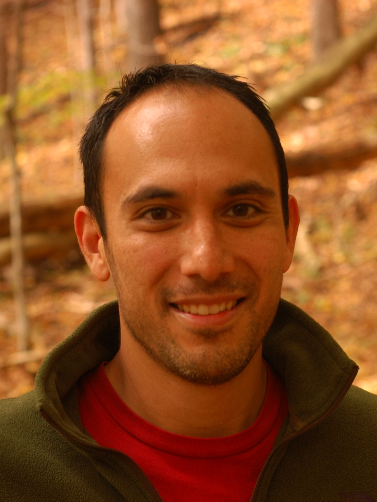

Jonathan DeCastro
|
Research Scientist Toyota Research Institute |
|
|
One Kendall Square Cambridge, MA 02139 |
|
| jonathan.decastro - at - tri - dot - global | |
About me
I am currently at the Toyota Research Institute in Cambridge, MA. I received my Ph.D. in 2017 from Cornell University as an affiliate of the Verifiable Robotics Research Group, where I worked with Prof. Hadas Kress-Gazit on automated, correct-by-construction controller synthesis for complex robots.
My research interests lie in the intersection of control theory, dynamical systems and formal methods. I have a deep interest in the following topics:
- Correct-by-construction synthesis of continuous controllers from temporal logic specifications.
- Algorithms for falsification of interesting system properties, such as safety.
- Application of formal synthesis, verification, and falsification to robotics applications of all kinds.
Publications
Journal Articles
DiversityGAN: Diversity-Aware Vehicle Motion Prediction via Latent Semantic Sampling
Xin Huang, Stephen McGill, Jonathan DeCastro, Brian Williams, Luke Fletcher, John Leonard, Guy Rosman
Robotics and Automation Letters (accepted, with oral presentation at IROS 2020)
[arXiv]
Reactive Mission and Motion Planning while Avoiding Dynamic Obstacles
Javier Alonso-Mora, Jonathan DeCastro, Vasumathi Raman, Daniela Rus and Hadas Kress-Gazit
Autonomous Robots, 42(4):801–824, April, 2018.
[pdf | bibtex | link]
Automated Generation of Dynamics-Based Runtime Certificates for High-Level Control
Jonathan DeCastro, Ruediger Ehlers, Matthias Rungger, Ayca Balkan and Hadas Kress-Gazit
Journal of Discrete Event Dynamical Systems: Special Topical Issue on Formal Methods in Control, 27(2):371-405, 2017.
[pdf | bibtex | link]
Synthesis of Nonlinear Continuous Controllers for Verifiably-Correct High-Level, Reactive Behaviors
Jonathan DeCastro and Hadas Kress-Gazit
International Journal of Robotics Research, 34(3):378-394, 2015.
[pdf | bibtex | link]
Robust Fault Diagnosis of Aircraft Engines: A Nonlinear Adaptive Estimation-Based Approach
Liang Tang, Xiaodong Zhang, Jonathan DeCastro
IEEE Transactions on Control Systems Technology, 21 (3):861-868, 2012.
[link]
Rate-Based Model Predictive Control of Turbofan Engine Clearance
Jonathan DeCastro
AIAA Journal of Propulsion and Power, 23(4):804–813, 2007.
[bibtex | link]
Peer-Reviewed Conference Papers
Implicit Multi-Agent Coordination at Unsignalized Intersections via Topological Inference
Christoforos Mavrogiannis, Jonathan A. DeCastro, and Siddhartha S. Srinivasa
Under review
[arXiv]
CARPAL: Confidence-Aware Intent Recognition for Parallel Autonomy
Xin Huang, Stephen McGill, Jonathan DeCastro, Brian Williams, Luke Fletcher, John Leonard, Guy Rosman
Under review
[arXiv]
Interpretable Policies from Formally-Specified Temporal Properties
Jonathan DeCastro, Karen Leung, Nikos Aréchiga, and Marco Pavone
ITSC 2020 The 23rd IEEE International Conference on Intelligent Transportation Systems. (To appear)
[pdf | bibtex]
Counterexample-Guided Safety Contracts for Autonomous Driving
Jonathan DeCastro, Lucas Liebenwein, Cristian-Ioan Vasile, Russ Tedrake, Sertac Karaman and Daniela Rus
WAFR 2018: The 13th International Workshop on the Algorithmic Foundations of Robotics. Mérida, Mexico.
[pdf | bibtex]
Compositional and Contract-based Verification for Autonomous Driving on Road Networks
Lucas Liebenwein, Wilko Schwarting, Cristian-Ioan Vasile, Jonathan DeCastro, Javier Alonso-Mora, Sertac Karaman and Daniela Rus
ISRR 2017: International Symposium on Robotics Research. Puerto Varas, Chile.
[pdf | bibtex | video]
Nonlinear Controller Synthesis and Automatic Workspace Partitioning for Reactive High-Level Behaviors
Jonathan DeCastro and Hadas Kress-Gazit
HSCC 2016: 19th ACM International Conference on Hybrid Systems: Computation and Control. Vienna, Austria.
[pdf | bibtex | video]
Collision-Free Reactive Mission and Motion Planning for Multi-Robot Systems
Jonathan DeCastro, Javier Alonso-Mora, Vasumathi Raman, Daniela Rus and Hadas Kress-Gazit
ISRR 2015: International Symposium on Robotics Research. Sestri Levante, Italy.
[pdf | bibtex | video]
Dynamics-Driven Adaptive Abstraction for Reactive High-Level Mission and Motion Planning
Jonathan DeCastro, Vasumathi Raman and Hadas Kress-Gazit
ICRA 2015: IEEE International Conference on Robotics and Automation. Seattle, WA, USA.
[pdf | bibtex]
Guaranteeing Reactive High-Level Behaviors for Robots with Complex Dynamics
Jonathan DeCastro and Hadas Kress-Gazit
IROS 2013: IEEE/RSJ International Conference on Intelligent Robots and Systems. Tokyo, Japan.
[pdf | bibtex]
A Safety Verification Approach to Fault-Tolerant Aircraft Supervisory Control
Jonathan DeCastro, Liang Tang, Bin Zhang and George Vachtsevanos
GNC 2011: AIAA Guidance, Navigation, and Control Conference. Portland, OR, USA.
[bibtex]
A Unified Nonlinear Adaptive Approach for Detection and Isolation of Engine Faults
Liang Tang, Xiaodong Zhang, Jonathan DeCastro, Luis Farfan-Ramos and Donald Simon
ASME Turbo Expo 2010. Controls, Diagnostics and Instrumentation. Glasgow, UK.
[link]
Analysis of Fault-Tolerance and Decentralization Concepts for Distributed Engine Control
Jonathan DeCastro, Liang Tang, Carl Byington and Dennis Culley
JPC 2009: 45th AIAA Joint Propulsion Conference and Exhibit. Denver, CO, USA.
[bibtex]
Peer-Reviewed Workshop Papers
Certified Control for Self-Driving Cars
Daniel Jackson, Jonathan DeCastro, Soonho Kong, Dimitrios Koutentakis, Angela Leong Feng Ping, Armando Solar-Lezama, Mike Wang and Xin Zhang
DARS 2019: 4th Workshop on the Design and Analysis of Robust Systems. New York, NY, USA.
[pdf]
Better AI through Logical Scaffolding
Nikos Arechiga, Jonathan DeCastro, Soonho Kong and Karen Leung
FoMLAS 2019: 2nd Workshop on Formal Methods for ML-Enabled Autonomous Systems. New York, NY, USA.
[arXiv]
Technical Reports
Dynamics-Based Reactive Synthesis and Automated Revisions for High-Level Robot Control
Jonathan DeCastro, Ruediger Ehlers, Matthias Rungger, Ayca Balkan, Paulo Tabuada and Hadas Kress-Gazit
CoRR 2016
[pdf | arXiv]
Research
Formally-Verified Contracts for Safe Deployment of Self-Driving Cars
Verifying the safety of autonomous vehicles is paramount for their successful deployment. However, formal verification of autonomous driving decision systems is computationally intractable. At TRI, I have proposed, in conjunction with collaborators at MIT, a framework for constructing a set of safety contracts that serve as design requirements for controller synthesis for a given scenario. Here, a contract is a sufficient condition that is placed at the interface of a controlled system (a controller for an autonomous driving system) that guarantees safety with respect to probabilistic models of traffic behavior in the face of additional requirements (e.g. rules of the road).
We automate the computation of contracts by combining gradient-based trajectory optimization and tractible reachable set computations. In this work, we illustrate the utility of the contracts-based approach in an interacting multi-car traffic scenario, and have shown scalability by composing contracts together for wide array of maneuvers and road topologies. We have furthermore analyzed the safety impact of relaxing certain traffic rules to overcome conservatism that arises when rigidly adhering to the rules of the road.
Publications: [Liebenwein, et. al. (ISRR 2017)] [DeCastro & Liebenwein, et. al. (WAFR 2019)]
Automatic Synthesis of High-Level, Reactive Controllers for Nonlinear Systems

Can we automatically synthesize controllers for robots with dynamics that are capable of fulfilling complex tasks in human environments?
The highlight of this work was an approach for constructing a library of controllers that, collectively, guarantee the sequence of motions as requested by the high-level controller (represented as a finite-state machine). One important outcome is that the composition of the low-level controllers for individual behaviors preserve the correctness of the high-level specification under all possible environment behaviors.
This work included, among other aspects, transferring the high-level specification into sound mathematical structures for the low-level controllers, abstraction refinement, and specification repair (specifically, environment assumption refinement).
Publications: [DeCastro & Kress-Gazit (IROS 2013)] [DeCastro & Kress-Gazit (IJRR 2015)] [DeCastro, Raman & Kress-Gazit (ICRA 2015)] [DeCastro & Kress-Gazit (HSCC 2016)]
Low-Complexity Synthesis for Multi-Robot Scenarios with Dynamic Obstacles
In multi-robot scenarios operating in human environments, controller synthesis can quickly become intractible due to the exponential growth of complexity with the number of robots and dynamic obstacles present in the environment. A high-level synthesis scheme that uses a local planner with local collision avoidance guarantees has been adopted to produce a mission planner that is able to correctly coordinate multiple robots in the presence of dynamic obstacles. To avoid exponential complexity, we do not require observation of the global behavior of the dynamic obstacles; instead the controller reasons about behaviors of the dynamic obstacles locally, yet preserves global guarantees of task satisfaction. We demonstrate the runtime features of the approach via experiments involving a heterogeneous team of robots.
Publications: [DeCastro, et. al. (ISRR 2015)]
Simulation Tools for Aircraft Control Systems
I was part of a team at NASA dedicated to developing the software tool C-MAPSS, a “virtual” aircraft engine. The tool has become widely popular among resesarchers for prototyping control algorithms and use as a testbed for simulation-in-the-loop experiments. I have partipated in several research projects involving C-MAPSS, such as developing fault-tolerant control algorithms, developing nonlinear fault detection algorithms, and simulator-in-the-loop experiments with flightworthy hardware.
Publications: [DeCastro, et. al. (2011)]
Service
Program Committee Member: Hybrid Systems: Computation and Control (HSCC), 2018 | 2019
Workshop Organizer: “Command Your Own Robot”, Expanding Your Horizons Conference (Cornell U.), 2014 | 2015
Mentor: Soft Robotics Design Competition (two teams), 2015
- First Prize (out of 82 teams)
- Honorable Mention for outstanding project idea
Voting Member: Cornell Graduate and Professional Student Assembly, 2013 | 2014
Course Instructor: "Systems Modeling", Rochester Institute of Technology, Winter 2010-2011
Reviewer
- Robotics and Automation Letters (RA-L), 2018 | 2020
- IEEE Transactions on Robotics (T-RO), 2016 | 2018
- International Conference on Intelligent Robots and Systems (IROS), 2016 | 2018 | 2019
- International Conference on Robotics and Automation (ICRA), 2014 | 2015 | 2017 | 2018 | 2020
- IEEE Conf. on Event-Based Control, Communication, and Signal Processing (EBCCSP), 2015
- American Control Conference (ACC), 2014
- IEEE Transactions on Industrial Electronics, 2013
- ASME Turbo Expo, 2010